Create Room Group
The Room group function merges individual rooms into a group. The groups can be derived from existing connections (for example an air handling unit) specific to the application or can form a purely static group.
Prerequisites
- Select Application View.
- Select Applications > BIM Graphic > [graphics page].
- Select the BIM Viewer tab.
- Click Show grouping
 .
. - Click Edit
 .
. - Displays the BIM room hierarchy.
- The room grouping window displays in Edit mode. The window is empty for first-time startup.


Create a backup file using the Additional Functions before changing the configuration.
Create a Static Group for a Few Rooms
Scenario: All the rooms occupied by company form a group.
- Click Add in the room grouping window.
- The Edit Group dialog box opens.
- Enter a description in the Group name field.
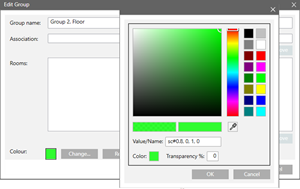
- Click Modify and select a color.
- Click OK two times.
- A new group is created in the room grouping window.
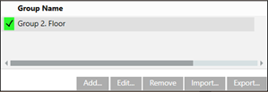
- Select the floor (1) and room (2) on the floor plan.
- The room is highlighted in the BIM room hierarchy.
- Drag the room from the BIM room hierarchy (3) to the new group (4).
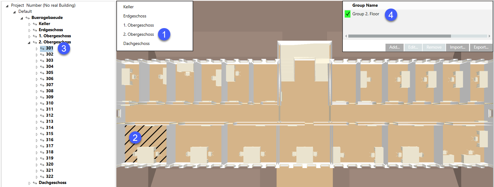
- Repeat the process for each room belonging to this group.
- Click Save
 .
. - The rooms are assigned to the new group.
- In the room grouping window, select the new group.
- The floor as well as the selected rooms are highlighted in color.
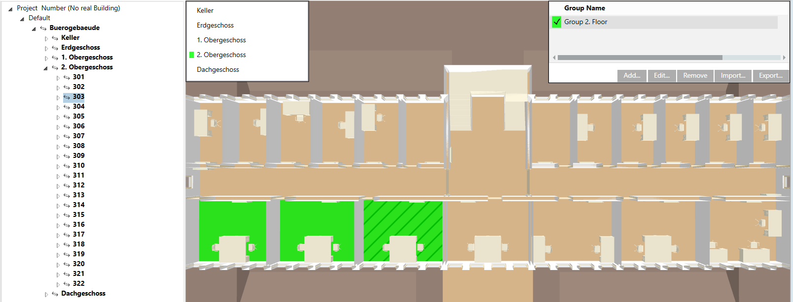
Create Static Group for an Entire Floor
Scenario: Company B occupies most of the rooms on a floor. These rooms form a group.
- Click Add in the room grouping window.
- The Edit Group dialog box opens.
- Enter a description in the Group name field.
- Click Modify and select a color.
- Click OK.
- A new group is created in the room grouping window.
- Select the floor (1).
- The floor is highlighted in the BIM room hierarchy.
- Drag the floor from the BIM room hierarchy (2) to the new group (3).
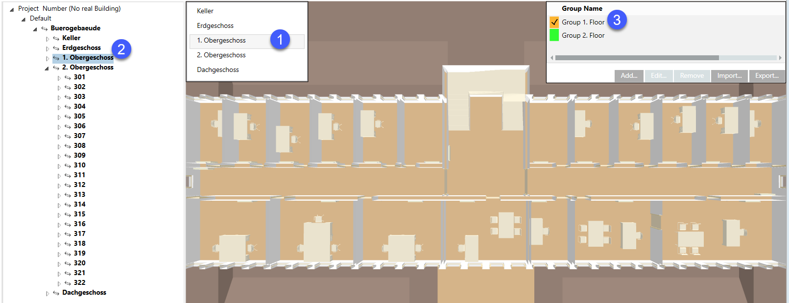
- Click Save .
- All rooms are assigned to the new group.
- In the room grouping window, select the new group.
- Click Edit (1) and highlight the rooms (2) that do not belong to this group.
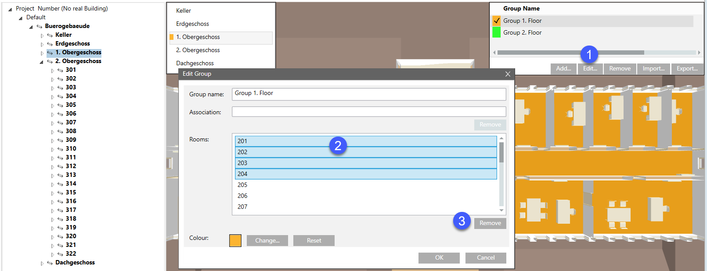
- Click Remove (3) and then OK.
- In the room grouping window, select the new group.
- The floor is depicted as a group. The removed rooms are not highlighted in color.
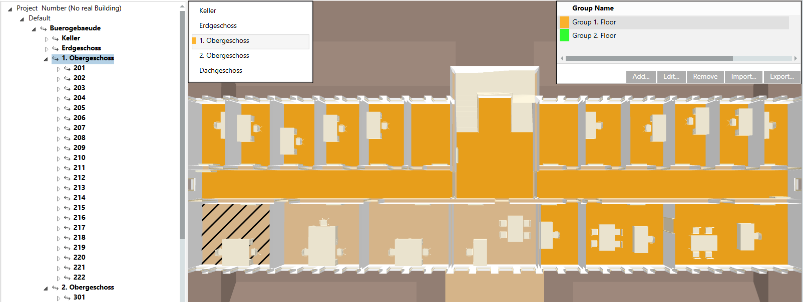
Create a Group for a Specific Application
Scenario: All rooms connected to air handling unit (AHU) A form a group. AHU A is designed for basement and ground floor west.
- In System Browser, select Logical View.
- Select Logical > [Network name] > [Building name] > [Discipline].
- Drag the discipline from System Browser to the room grouping window.
- A new group is created in the room grouping window.
- The name corresponds to the selected discipline.
- Rooms are not yet assigned.
- Click Modify and select a color.
- Click OK two times.
- Select the floor (1) and room (2) on the floor plan.
- The room is highlighted in the BIM room hierarchy.
- Drag the room from the BIM room hierarchy (3) to the new group (4).
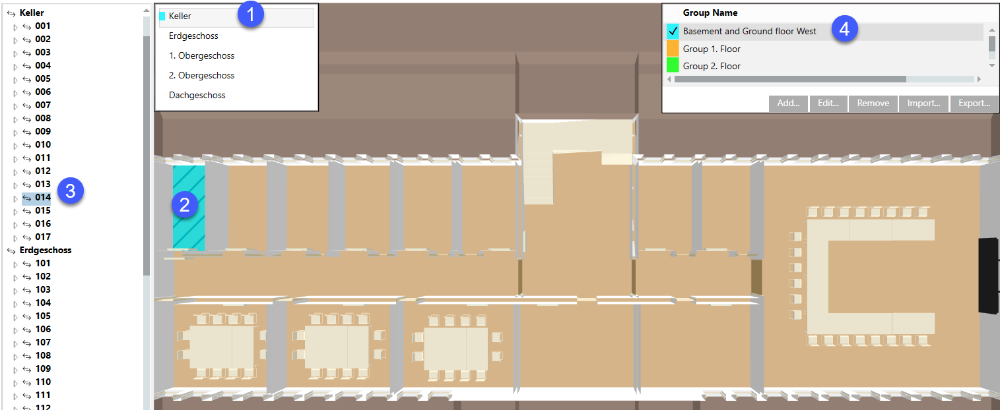
- Repeat the process for each room belonging to this group.
- Repeat the process for the second floor.
- Click Save .
- The rooms are assigned to the new group.
- The Association check box is selected in the grouping window.
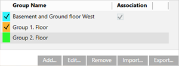
- In the room grouping window, select the new group.
- The floor as well as the selected rooms are highlighted in color.
Basement: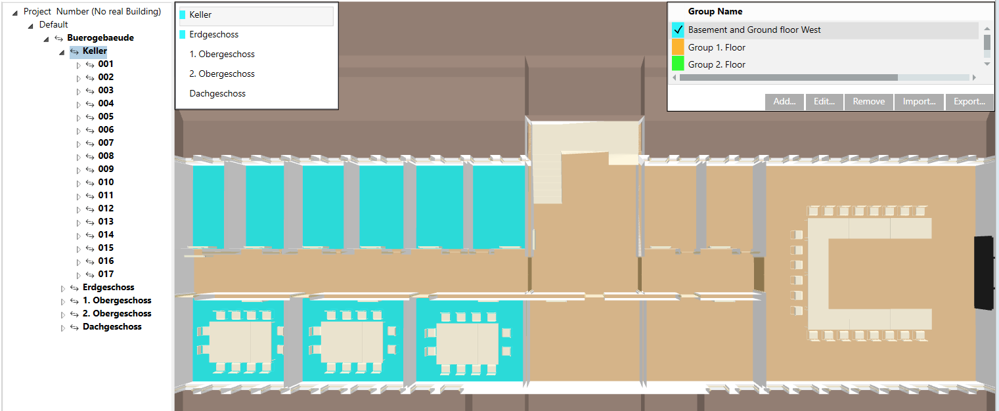
1st floor: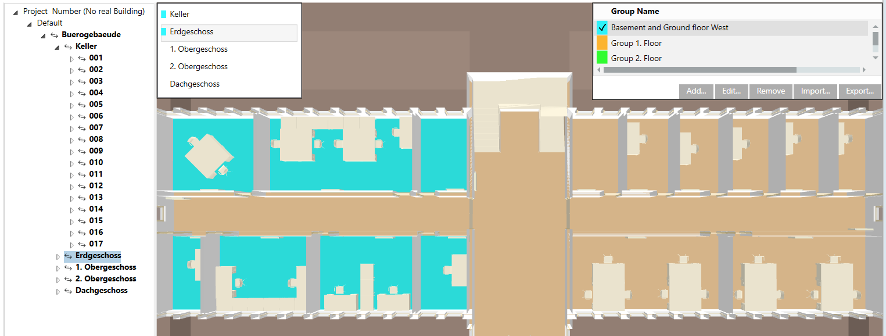